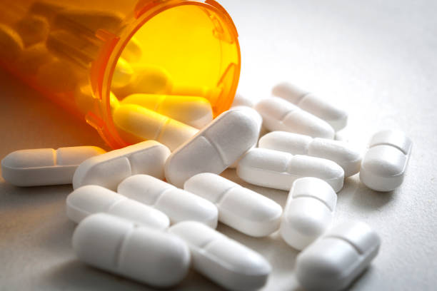

A large number of people in the United States and even around the world struggle with obesity. Obesity is one of the main factors that lead to significantly increasing the risk of developing deadly diseases such as diabetes, cardiovascular disease, etc. In order to address this problem, many people are led to using dietary supplements that claim to be able to aid in weight loss through the use of substances commonly known as starch blockers. In theory, these substances promote weight loss by inhibiting the breakdown of carbohydrates and thus slowing the digestion of carbohydrate derived calories from glucose (Celleno et al., 2007).
One dietary supplement in particular, Carb Cutter, contains an ingredient extracted from the northern kidney bean known as Phaselous vulgaris. This ingredient prevents the proper function of amylase. These beans contain alpha-amylase inhibitors which prevent starch digestion by completely blocking access to the active site of the amylase enzyme (Barrett et al., 2011).
The goal of this report is to investigate the effectiveness of Carb Cutter in slowing the breakdown of starch by the enzyme amylase. The significance of this report is to determine if the claims of dietary supplements, in particular Carb Cutter, are valid in that they are effective in aiding weight loss in humans. This will be done by conducting an experiment in which Carb Cutter is introduced into an amylase and starch solution and then its effects on starch concentration over time will be observed. The hypothesis of this experiment is that Carb Cutter will be successful in slowing the breakdown of starch by amylase by a measurable amount. This will be measured by comparing the rate of change in both the control amylase and experimental Carb Cutter solutions.

Supplies
|
ProcedureFirst, we will need to create 4 known data points to create a standard curve, one for the normal reaction and another for the Carb Cutter reaction. We will create 4 known solutions with final volumes of 4 ml and starch concentrations of .2, .4, .6, and .8 mg/ml. Tris buffer will be used as a diluent for these 4 solutions. A fifth solution of 4 ml of tris buffer will be used as a blank to zero the spectrophotometer. Then .3 ml of I2Kl will be added to each solution. Then, the absorbance values of each of these solutions will be measured and noted. Next, we will conduct the normal reaction. For this, we will need to create a blank tube for the spectrophotometer filled with .13 ml amylase, 3.87 ml tris, and .3 ml I2Kl. Then, we will need to have 6 test tubes ready with .3 ml I2KL in each. Next, we will prepare the reaction tube with 21 ml of starch and 8 ml of tris. When we are ready to start the reaction, we will add 1 ml of amylase to the reaction tube. Once the reaction has started, we will start our stopwatch and proceed to deposit 4 ml of the reaction tube into each of the 6 test tubes every 30 seconds up to 3 minutes. In the time between each deposit of the reaction tube solution into the test tubes, we will measure and note the absorbance values of each test tube. Finally, for the Carb Cutter reaction, the procedure will be similar with some key differences. For the blank tube, we will need .13 ml amylase, 3.2 ml tris, .3 ml I2KL, and .67 ml Carb Cutter. We will still need 6 test tubes ready with .3 ml I2KI. For the reaction tube, we will need 1 ml amylase, 5 ml Carb Cutter, and 3 ml tris. Then, we will wait 15 minutes before adding 21 ml of starch to start the reaction. The procedure for depositing the reaction tube solution into the 6 test tubes every 30 seconds up to 3 minutes and measuring absorbance values is the same as in the normal reaction. |
Click HERE to view the Results